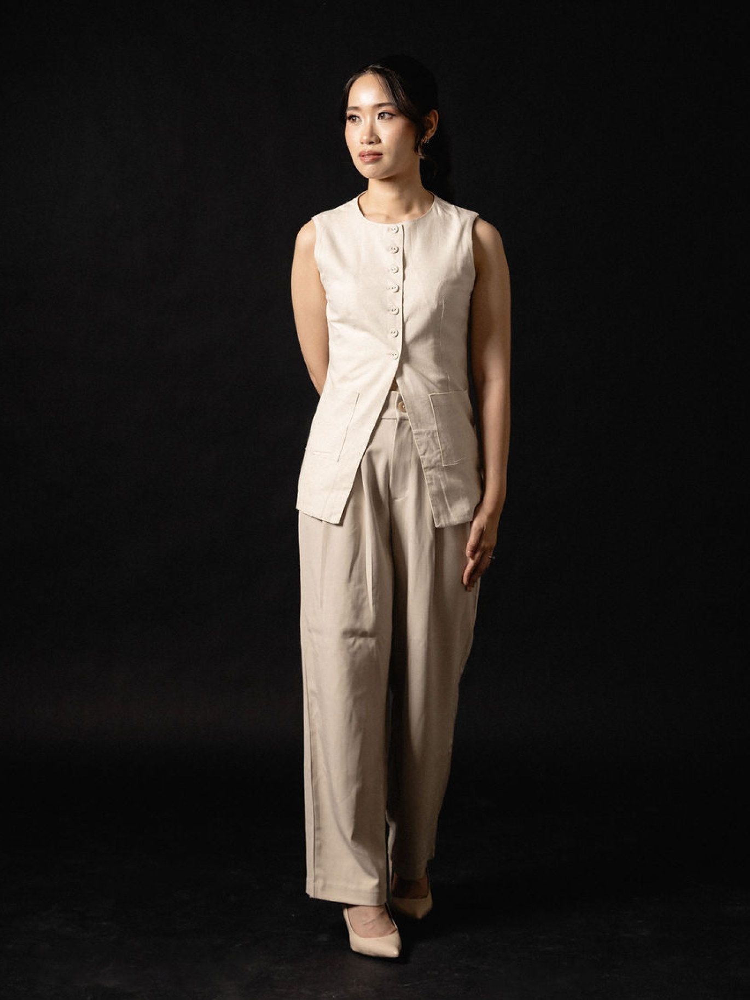

Adeline is a multi-disciplinary designer focused in digital product design, with 7+ years of experience delivering end-to-end solutions for SaaS and consumer apps.
Her background in communication design informs her user-centric approach, translating complex problems into intuitive and engaging digital experiences across EdTech, Travel, and F&B businesses.
Her process involves leveraging AI-powered tools to accelerate her design process, from research synthesis to prototyping, ensuring efficient outcomes without compromising quality.
Born and raised in Jakarta, she has lived for a semester in the United States for study, and two years in Bali. Professionally, she has worked with three multinational companies, which has developed her skillset in communicating with people from diverse backgrounds.

Outside of work, she always takes time for prepping real food, exercising her muscles at the gym, and playing padel.
She also enjoys crafting and designing something pretty, and stays active in the design community.